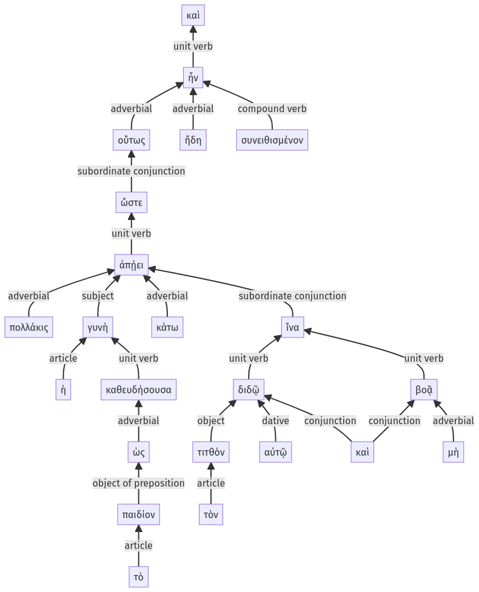

Lysias, 1.10.1-1.10.23a
1.9.39-1.9.57a | 1.10.24-1.10.49a
Sentence 20
1.10.1-1.10.23a
καὶ οὕτως ἤδη συνειθισμένον ἦν, ὥστε πολλάκις ἡ γυνὴ ἀπῄει κάτω καθευδήσουσα ὡς τὸ παιδίον, ἵνα τὸν τιτθὸν αὐτῷ διδῷ καὶ μὴ βοᾷ.
1 οὕτως ἤδη συνειθισμένον ἦν
2 ὥστε πολλάκις ἡ γυνὴ ἀπῄει κάτω
3 καθευδήσουσα ὡς τὸ παιδίον
3 ἵνα τὸν τιτθὸν αὐτῷ διδῷ
3 καὶ μὴ βοᾷ
καὶ οὕτως ἤδη συνειθισμένον ἦν, ὥστε πολλάκις ἡ γυνὴ ἀπῄει κάτω καθευδήσουσα ὡς τὸ παιδίον, ἵνα τὸν τιτθὸν αὐτῷ διδῷ καὶ μὴ βοᾷ.
Highlighting:
- connecting words
- unit verb
- subject
- object
Color code:
- independent clause (level 1, transitive verb)
- subordinate clause (level 2, intransitive verb)
- circumstantial participle (level 3, intransitive verb)
- subordinate clause (level 3, transitive verb)
- subordinate clause (level 3, intransitive verb)
- independent clause (level 1, transitive verb)
- subordinate clause (level 2, intransitive verb)
- circumstantial participle (level 3, intransitive verb)
- subordinate clause (level 3, transitive verb)
- subordinate clause (level 3, intransitive verb)
